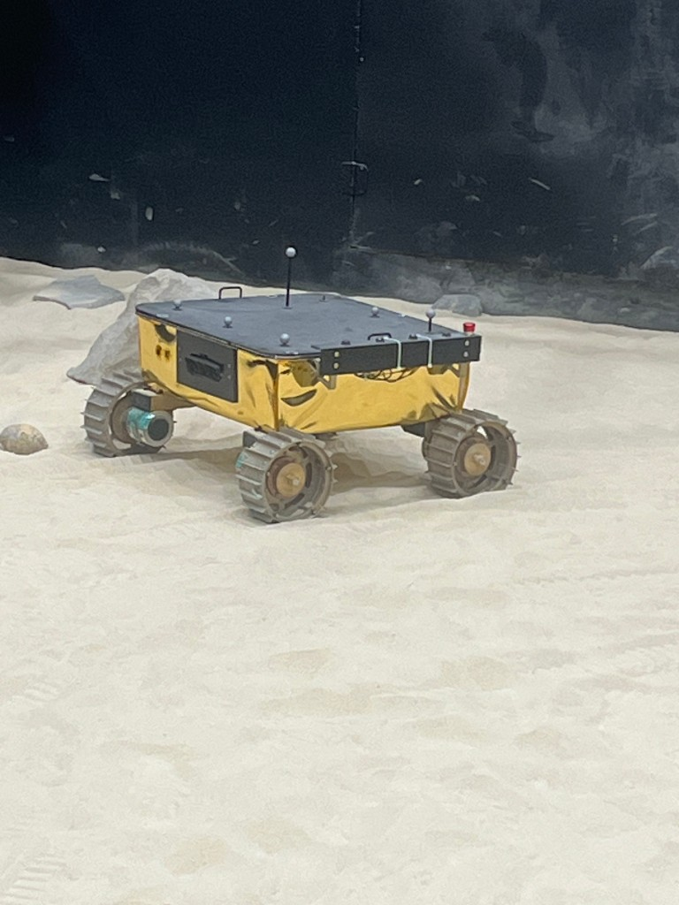

I study ECE and Robotics at Carnegie Mellon University in Pittsburgh, where I build hardware, autonomy, and compute.
My work runs from digital architecture through embedded control to machines that move in the real world.
I'm currently building tryastrea.tech.
I'm interested in digital hardware, embedded real-time systems, robotics, and machine learning. Most of my projects are about turning ambitious ideas into reliable systems that run on real hardware.
A systolic INT8 engine in SystemVerilog with DSP multipliers, on-chip BRAM, and pipelined compute stages. The architecture prioritizes data reuse and parallel execution for efficient edge inference.
A compact real-time operating environment that coordinates sensing, control, and actuation under tight deadlines, supported by a custom PCB designed around the ESP32.

MoonRanger: NASA-Funded Lunar Rover
with Red Whittaker and David Wettergreen
Carnegie Mellon University video
A wheel testing framework for MoonRanger that validates mobility and hardware behavior across simulated south-pole terrain.
Compared classical, quantum, and hybrid neural architectures on two biomedical datasets, with SHAP explanations, adversarial analysis, counterfactuals, and governance metadata.
A pix2pix-inspired GAN with a U-Net generator and PatchGAN discriminator, evaluated for image quality and diversity using FID and Inception Score. Hover to see the enhanced output.
Miscellanea
Toolbox
Hardware: SystemVerilog, FPGA, PCB design
Embedded: C/C++, RTOS, ESP32
Robotics: autonomy, systems integration, field testing
ML: PyTorch, PennyLane, SHAP
{kind=link}
{kind=link}
{kind=link}